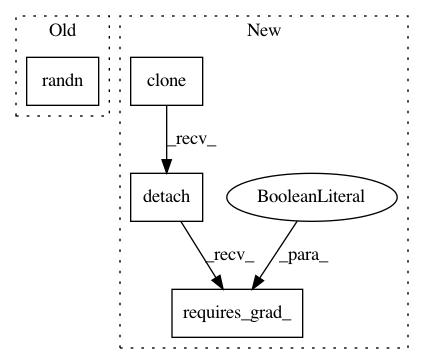

17e18750dd0b981460903ae631580d1d200509b5,test/lazy/test_constant_mul_lazy_tensor.py,TestConstantMulLazyTensor,test_inv_matmul,#TestConstantMulLazyTensor#,14
Before Change
class TestConstantMulLazyTensor(unittest.TestCase):
def test_inv_matmul(self):
labels_var = torch.tensor(torch.randn(4), requires_grad=True)
labels_var_copy = torch.tensor(labels_var, requires_grad=True)
grad_output = torch.randn(4)
After Change
class TestConstantMulLazyTensor(unittest.TestCase):
def test_inv_matmul(self):
labels_var = torch.randn(4, requires_grad=True)
labels_var_copy = labels_var.clone().detach().requires_grad_(True)
grad_output = torch.randn(4)
// Test case
c1_var = torch.tensor([5, 1, 2, 0], dtype=torch.float, requires_grad=True)
In pattern: SUPERPATTERN
Frequency: 3
Non-data size: 4
Instances
Project Name: cornellius-gp/gpytorch
Commit Name: 17e18750dd0b981460903ae631580d1d200509b5
Time: 2018-09-21
Author: balandat@fb.com
File Name: test/lazy/test_constant_mul_lazy_tensor.py
Class Name: TestConstantMulLazyTensor
Method Name: test_inv_matmul
Project Name: cornellius-gp/gpytorch
Commit Name: 17e18750dd0b981460903ae631580d1d200509b5
Time: 2018-09-21
Author: balandat@fb.com
File Name: test/lazy/test_kronecker_product_lazy_tensor.py
Class Name: TestKroneckerProductLazyTensor
Method Name: test_matmul_batch_mat
Project Name: cornellius-gp/gpytorch
Commit Name: 17e18750dd0b981460903ae631580d1d200509b5
Time: 2018-09-21
Author: balandat@fb.com
File Name: test/lazy/test_constant_mul_lazy_tensor.py
Class Name: TestConstantMulLazyTensor
Method Name: test_batch_inv_matmul